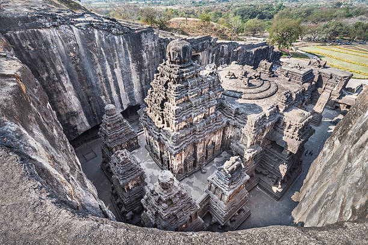
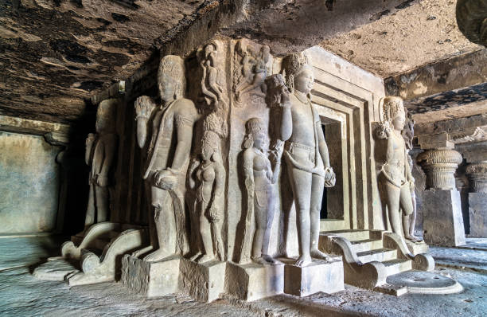
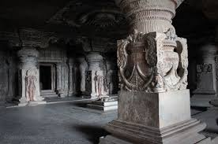

Ajanta Caves

Introduction
The Ajanta Caves, located in the Aurangabad district of Maharashtra, India, are one of the most magnificent rock-cut cave complexes in the world. These caves are famous for their exquisite murals, sculptures, and architectural brilliance. The caves date back to between the 2nd century BCE and 6th century CE and represent an important chapter in India’s Buddhist heritage.
History
These caves date back to the 2nd century BCE and were used by Buddhist monks as monastic retreats. They feature exquisite murals depicting Jataka tales and Buddhist traditions.
Origin and Construction (2nd Century BCE – 6th Century CE)
The Ajanta Caves were built in two phases:
First Phase (2nd Century BCE – 1st Century CE)
The earliest caves were excavated during the Satavahana dynasty.
These caves belong to the Hinayana (Theravāda) Buddhist tradition, where Buddha was not depicted in human form but through symbols like stupas.
The main focus was on monastic retreats for Buddhist monks.
The earliest caves from this period are Cave 9, Cave 10, Cave 12, and Cave 13, which served as prayer halls (Chaityas) and monasteries (Viharas).
Second Phase (5th – 6th Century CE)
The second phase took place under the patronage of the Vakataka dynasty, especially during the reign of Emperor Harishena (c. 460–477 CE).
This period saw the emergence of the Mahayana Buddhist tradition, which depicted Buddha in human form along with Bodhisattvas.
The most famous caves with paintings, such as Cave 1, Cave 2, Cave 16, and Cave 17, were built during this time.
The intricate murals and sculptures from this period are considered masterpieces of Indian art.
Architecture
The Ajanta Caves consist of 30 rock-cut caves, divided into Chaitya halls and Viharas, showcasing the brilliance of ancient Indian craftsmanship.
Murals and Paintings
The walls and ceilings of Ajanta are covered with frescoes depicting Jataka tales (stories of Buddha’s past lives), court scenes, deities, and celestial beings.
The paintings use natural colors derived from minerals, plants, and clay.
Sculptures and Carvings
Elaborate Buddha statues, Bodhisattvas, and mythological figures are carved into the rock.
Some of the finest sculptures include the reclining Buddha in Cave 26 and the Bodhisattva Padmapani in Cave 1.
Significance
Ajanta Caves are renowned for their well-preserved paintings and sculptures, which provide insight into India's rich Buddhist heritage.
Artistic Masterpiece: Ajanta is a treasure trove of early Indian painting and sculpture.
Buddhist Heritage: It showcases the evolution of Buddhism from Hinayana to Mahayana traditions.
Cultural Influence: The caves influenced later Indian and Asian Buddhist art.
Visitor Information
Location: Aurangabad, Maharashtra, India
Timings: 9:00 AM to 5:00 PM (Closed on Mondays)
Entry Fee: ₹40 for Indians, ₹600 for Foreigners
Best Time to Visit: October to March
How to Reach
The nearest railway station is Jalgaon, about 60 km away.
The Ajanta Caves are accessible by road from Aurangabad bus stop
The closest airport is Aurangabad Airport, around 100 km from the site.
Location
More Information
For more details, visit these websites:
Gallery


